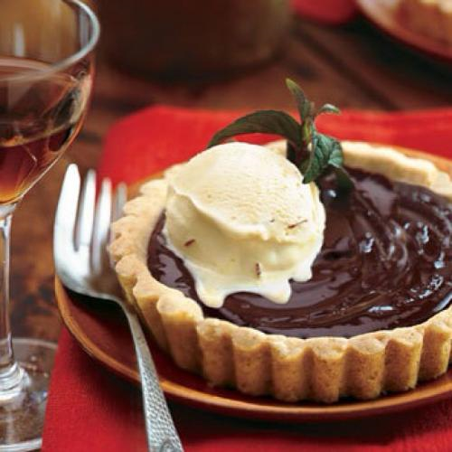

Welcome to Vilin's warm hut.
Pie
INTRODUCTION
Hello,everyone. Welcome to today's introduction.Today,
Vilin will discuss with you some stories of pie and how to make pie,
whether you like pie or not,
tomorrow, you must have a new view of pie.

MY MEMORY OF PIE
I grew up with pie as a companion, when I was very young, pie is not just my favorite snack, but also my emotional placebo.
In my childhood, my grandmother often took me to eat pie，especially when I was in a bad mood. Pie is a good memory of my childhood. Every time I miss home, I will eat pie alone.
The story is over.
HOW TO MAKE PIE